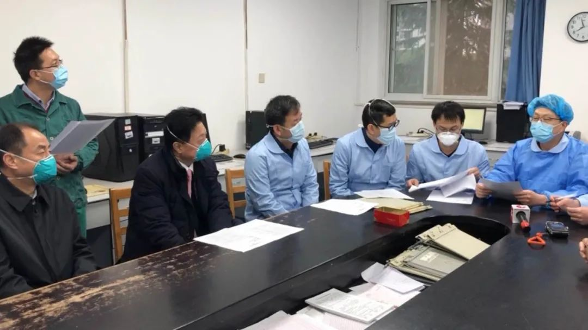
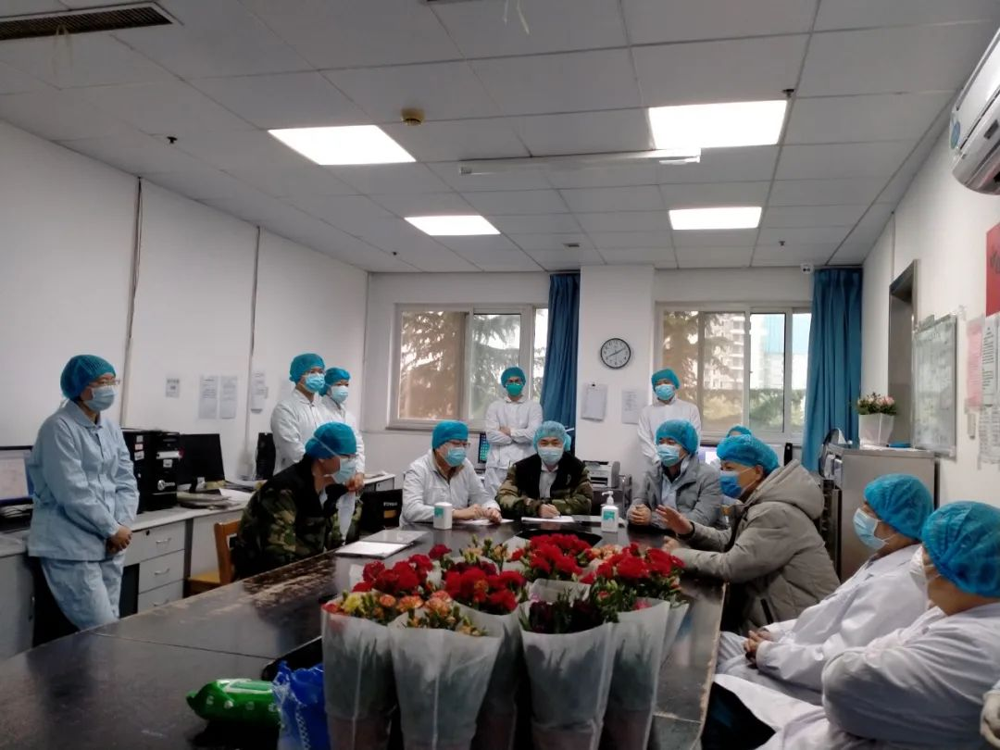
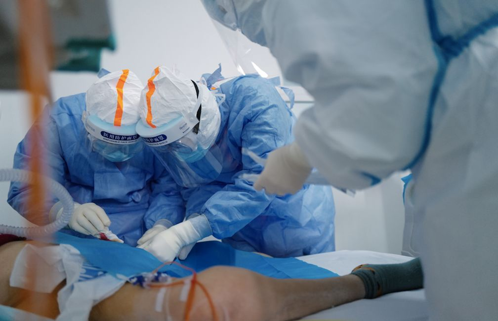
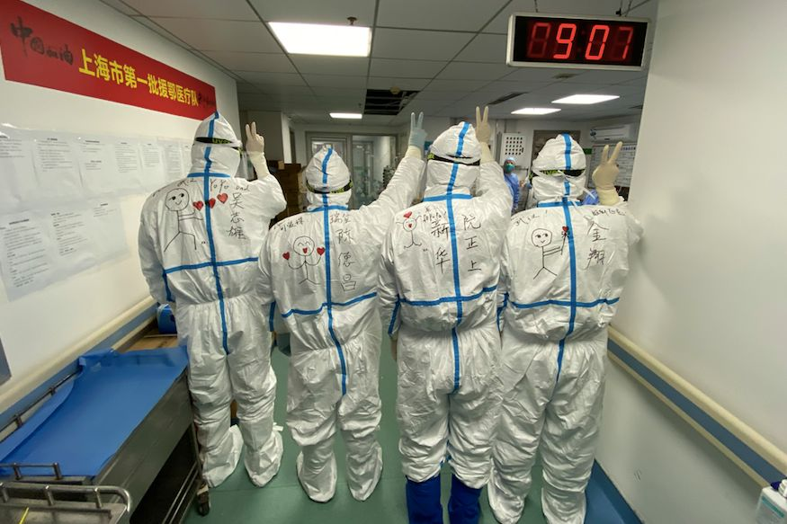

***
***武汉新冠患者病死率逐渐下降到3%，关键原因是什么 | 专访瑞金医院副院长陈尔真
原文链接 备份链接 新冠肺炎重症患者死亡率，比SARS低比普通流感高。 记者 | 黄 祺 3月6日下午，武汉市第三医院光谷院区19楼8病区迎来“关门大吉”。 随着上海市第一康复医院高天霖医生一声“关灯！”，11位医护人员身后一片漆黑，高医 …
*****两个月下来，治疗上相对成熟了，病人也不多了，所以每个病人都要给他精细化的管理，做一对一的个体化的治疗方案。*****

上海医疗队的医生们。受访者供图
文 | 新京报记者 王双兴
编辑 | 胡杰 校对 | 杨许丽
►本文约5200字，阅读全文约需10分钟
3月17日开始，工作于方舱医院和非重症定点收治医院的援鄂医务人员开始陆续返程，截至20日，已有1.2万人撤离湖北。
国家卫健委医政医管局监察专员郭燕红介绍，按照工作计划，国家医疗救治专家组以及高水平的重症救治团队，还将留守和坚守在重症定点收治医院，直到患者的救治任务特别是重症患者的医疗救治任务全部完成以后，再予撤离。
金银潭医院北二楼、北三楼的上海医疗队是“留守”团队之一。
两个月前的1月25日零点，飞机从上海起飞，两小时后降落，135位医护人员抵达武汉，是国内第一支援鄂医疗队。他们整体接管了金银潭医院的两个病区。
66岁的周新是呼吸领域的学科带头人，担任医疗组组长，也是组里年纪最大的医生；吴志雄则来自重症医学科，和周新等一起，负责北三楼重症和危重症病人的救治。
近两个月的时间里，他们的工作从忙乱到逐渐有序，治疗方法也在不停探索和调整，两位医生告诉记者 ，这个阶段最重的工作就是尽可能地把危重病人的死亡率降下来。
从未知混乱到“定制化”治疗
******* *******
*******
剥洋葱：最近武汉的新增确诊人数在降低，一些负责轻症病人的医疗队也在陆续返回。你们在一线了解到的情况是怎样的？
吴志雄：病床越来越多地空出来了，然后新收的病人越来越少，之前有一次集中的收治，主要是因为像泰康医院、新华医院要恢复到正常医疗秩序，所以会把一些还在治疗中的病人转到定点医院，整体上情况在好转。
周新：过去这段时间里金银潭医院收治了2500多个病人，现在还有500多人在住院。重症病人大概占50％，危重症病人不太多了，大概七八十个。上海医疗队负责北二楼、北三楼两个病区，现在加起来有30多个病人，已经明显减少了，气管插管病人只有两个。现在工作的整体情况比刚来的时候要好多了。
剥洋葱：刚来时情况是怎样的？
周新：我们是接管了两个病区，原来都住满病人，病人病情非常重，29个病人里有16个都已经上了呼吸机，非常重。
一开始病区是临时改建成重症病房，所以很多设备就没有到位，比如呼吸机、纤维支气管镜、输液泵等等，后来慢慢有了。而且我们团队过来以后，防护物资也不够，再加上整个团队是几十家医院凑起来的人，医生护士来自不同的学科，也需要一个磨合的时间。总之那个时候工作非常繁重，医生们都非常忙乱。
吴志雄：前期病人的病情相对比较重，变化也比较快。金银潭医院的病人主要是其他医院转过来的，基本上是在外院治疗过一段时间、没有好转或者有恶化的病人。那时候我们这边刚有病床空出来，马上有120救护车把新的病人送进来。很多是危重的，有的可能无创呼吸机已经上了两个礼拜，所以转来的病人都很急，像这样的我们做了很多努力，可能结局还不是特别好。这是前面一个月给我们的印象。

接手病区第二天，上海医疗队进行早交班，左一为周新，右一为吴志雄。受访者供图
剥洋葱：从什么时候开始有了转折？
吴志雄：从方舱医院陆续收病人开始，我们能感觉到床位没有那么紧张了，以前一有空床马上会顶上，基本上每天不可能有空床。后来有时候病区能空出一两个床位了。而且转进来的病人不像之前那么重，这样的病人我们可以施展的余地相对大一些，可以做的事情更多一些。明显感觉到病人的愈后、恢复情况比前期要好。
周新：到三月初开始有了明显的好转，病人少了，危重病人也少了，非定点医院也陆续恢复正常了，我们休息的时间也多一点。
剥洋葱：现阶段的工作重点是什么？
周新：这个阶段最重的工作就是尽可能地把危重病人的死亡率降下来，一人一方案，所有插管、用呼吸机的危重病人，要经过院内多学科专家的疑难病例讨论，要给他制定一个治疗方案。出院病例、死亡病例也要进行讨论，总结经验。
吴志雄：3月20日我们就对两个病人进行了大会诊，是我们两个最危重的病人，他们感染新冠肺炎的时间相对较长，都接近一个月时间，而且都已经气管切管了。
一个60岁的病人有39摄氏度高热，讨论之后专家们认为高热的原因可能是病情继发的细菌感染，也可能是多重耐药性也就是超级细菌的感染，需要联合使用抗生素，覆盖长期的致病菌，还需要间断地从他的血、痰、肺泡灌洗液里面做细菌培养，明确到底哪个细菌是占优势菌，哪个细菌导致了他的高热。根据这些建议，还对这个病人调整了抗生素，又根据他的情况作了微调。
另一个病人年纪很大，88岁，他的呼吸有好转，后面会继续关注他的营养状态，希望整个免疫状态可以改善。

医护人员交班。受访者供图
剥洋葱：随着病人数量的下降、整体病情的减轻，相对而言更有精力来做这种“定制化”的治疗？
吴志雄：是的，如果病人数量很多的话，而且病人相对来说都很重的话，很难把太多的精力集中在一个人的身上。
周新：现在两个月下来，治疗上相对成熟了，病人也不多了，所以每个病人都要给他精细化的管理，做一对一的个体化的治疗方案。
治疗方法的探索与调整
******************
剥洋葱：在接管金银潭重症病区之初，对于新冠肺炎有哪些认知？
吴志雄：其实刚开始对它的了解主要是通过媒体报道，但是媒体不会提供特别多的专业信息，那时候我们会借助一些前辈在2003年SARS时的一线治疗经验，例如用大剂量的激素是有效的。另一方面武汉当地的医生会提供一些早期治疗经验作为参考，所以早期我们对它的印象就是一种和SARS差不多的病毒性肺炎，但接触病人之后这些印象会逐渐打破。

吴志雄帮华山医院的徐斌主任在防护服上写下名字和“华山派”。受访者供图
剥洋葱：接手治疗后对它的认识发生了怎样的变化？
吴志雄：首先我们发现如果给呼吸衰竭的病人持续使用大剂量激素，可以暂时缓解炎症，但没有办法把激素撤退掉，一旦撤掉缺氧会加重，而不撤掉的话，病人的淋巴细胞，他的免疫系统没办法恢复，最后病人可能抗不过去。
还有就是发现它的病程和SARS是不一样的，这个病毒会出现第二波高热，出现之后病人的病情会急转直下，很快就死亡。第二波体温高峰一般出现在发病后的7到10天，如果是危重病人会延后。目前还没有拿到直接的证据，但我们倾向于是因为病人处于免疫的抑制或缺乏状态，导致严重的细菌感染，而不是此前认为的炎症风暴，考虑是不是要用广谱的或者联合的抗生素治疗。
因为不断在治疗过程当中积累一些经验和教训，所以到后期我们尽量是不使用激素的，现在也避免使用一些免疫抑制的药物，更倾向于一些增强免疫力的药物，比如丙乙球蛋白、胸腺肽等等。

上海医疗队的医生们在病房。受访者供图
剥洋葱：在国家卫健委的前六版治疗方案中，对于激素的使用也在收紧。第六版中增加了血浆治疗，对于这一治疗方法，在临床中的观察是怎样的？
吴志雄：我们有几个病人参加了血浆治疗的临床试验，最近两天才开始解封。因为是双盲实验，我们也不知道病人使用的是恢复期患者的血浆还是普通人的血浆。参加实验的病人说明显感觉好起来了，但由于统计的数据还没有出来，我们也不知道是由于安慰剂效应，还是确实有效果。
剥洋葱：第七版新冠肺炎诊疗方案收入了病理解剖的内容，而且国内第一、第二例解剖案例是上海医疗队负责病区的病人，病理解剖可以为临床治疗提供怎样的指导？
吴志雄：现在解剖病理还没有完全公开，但是有些结果对我们有所启发。例如在临床上，我们发现很多病人咳嗽都是干咳，所以早期给我们的印象，病毒性肺炎好像是没有痰的。但后来病理解剖的结果提示其实是有痰的，但是非常黏稠不易排出，堵塞在小的气道里，氧气难以进入，二氧化碳排不出，会造成病人的胸闷。所以我们会慢慢纠正，把化痰药物的剂量加大，包括很早就在应用的“俯卧位”的方式也有了理论支撑，让肺泡打开，增加肺部和氧气的接触面积。
周新：最近就有一个关于解剖的讨论，病理学家来讲尸体解剖的病理情况，医生来介绍当时的治疗情况，临床和解剖两者结合讨论病理的改变，是非常有意义的事。通过病理我们就能了解到肺里面到底发生了什么，他心脏发生了什么，反过来指导我们治疗的用药，包括治疗的方案。
剥洋葱：上海医疗队抵达金银潭时，进行了第一版诊疗方案的培训，如今已经是第七版。除了上述几点，还有哪些治疗方法的调整？
吴志雄：把对病人的呼吸支持提前，普通吸氧还是出现缺氧的话马上就上无创呼吸机，几个小时内缺氧状态没有改善立刻插管进行有创呼吸。之前会观察一两天，现在认为越早插管对病人是有益的。还有就是CRT血透，仅作为治疗肾脏衰竭的方案，以前还用于应对炎症风暴，因为此前认为是炎症风暴现在更倾向于是细菌感染。
剥洋葱：怎么看待关于治疗方法上的一些争议？
吴志雄：我觉得这个很正常，因为这是一个未知的疾病，大家都是第一次看到，而且对它要有一个认识的过程，随着认识越来越深入，我觉得后面慢慢会达成一个共识，但早期大家都是处于一个探索阶段。

医生们为病人进行治疗。受访者供图
剥洋葱：现在疫情在国外很多国家扩散，我们的一些经验，有什么是其他国家可借鉴的？
周新：主要是一些防控措施，从大的方面来讲，有力的防控措施就是从源头做起，预防为主，对传染源隔离。我们刚来的时候，这里家庭聚集性的发病非常多，当时确诊的病人还在家里住不上医院。所以想办法把学校、广场、体育馆（利用起来），想办法隔离，后来就采取了方舱医院，先要隔离，否则人越（增）长越多。另外我们加强了社区力量，让市民呆在家里；挨家挨户筛查，然后医疗队支援。
这个病百分之八九十都是轻症病人，但是少数病人会演变成重症，发展到重症的大概10％，重症里面还有危重症的占到2％左右，发展到危重症的病人，死亡率就非常高了，所以这些病人要早期干预，也许不会发展成重症。
吴志雄：亚洲人群的易感因素是什么，流行病学是怎样的，以及我们在治疗当中用的俯卧位、有创通气、血透等等，这些病人效果怎么样。是我们可以告诉他们的。我们国家参与新冠肺炎的治疗比较早，接触的病人也比较多，可能给他们提供的经验更多一些。
剥洋葱：怎么看待当下关于全球疫情的讨论？
吴志雄：现在社交媒体对于国外的防控措施有很多声音，但是因为每个国家国情不一样，所以防控措施也不可能一模一样；对于病人治疗的话，整个世界应该都是差不多的，我们可以提供一些经验，同时国外也有很多东西是我们需要学习的，像美国对于气管切开的处理比我们积极得多，可能插管后两天觉得病人短期拔不掉管，直接就做气管切开，这样做是不是对病人更好？对病死率有没有影响？都是可以总结的经验。
像意大利他们现在有些地方开始使用头罩，整个人罩在一个罩子里面，里面充满氧气，病人在里面呼吸，可能感受会好一些，不像压着面罩那么闷。这在我们武汉是没有用过的，这是意大利可以给予我们的一个经验。德国可以给我们的经验是为什么他们病死率那么低，只有0.3％，他们是如何做到病死率低的？这是我们很好奇，想要知道的。

吴志雄和同院的护士长陈贞。受访者供图
期待 “清零”那一天
******************
剥洋葱：近两个月以来，医护人员的心态有怎样的变化？
周新：我们刚来的时候，病人多，这个病也严重，（我们）对它也不认识，很多预后都不太好，治疗效果相对差。当时的死亡率很高，病区里一天去世两三个人也是不罕见的。所以医生的压力非常大。
吴志雄：接管病区的那天，没几个小时就遇到了第一个病人的死亡。当时病人心跳很快，然后骤停，值班医生们推肾上腺素、做心外按压，心跳始终没有恢复，后来自主呼吸也停了。
在原来的工作中接触的重症病人也多，但是并不是每个进ICU的病人都会死，至少有一些是通过我们的努力可以挽回的。但是这边的病情进展得非常快，那时候对它的病理也不太了解，我们做了很多我们能做的、该做的、能够想到的事情，但是感觉一点都不见好，还是没有办法能够扭转病情的变化，觉得蛮沮丧的。我们用的药，做的治疗，无创啊插管啊，怎么完全没效果呢？那时候就很疑惑，每个ICU医生心里都有很多很多问号。
印象中方舱医院开始收治病人以后稍微好些，一方面转过来的病人没那么重了，也没那么多了，不用连轴转，稍微有空闲可以空下来思考，需要有思考的时间；另一方面有经验的支持了。
剥洋葱：随着治疗经验越来越多，心理上的压力会有所减轻吗？
吴志雄：还是会觉得不确定性很强，管理病人每天还是担惊受怕的。就像现在病房里的两个重症病人，每天都要关注他们的生命体征是怎样的，血压和氧饱和度有没有太大波动，对每天的血的化验进行对照，看有没有变化，药物是不是要调整，每天都在考虑这些事情。因为本来他们的情况就比较危重，如果稍微有一点变化没有及时处理，可能拖下去就无法挽回了。

吴志雄的防护服上写着“YOYO DAD”，YOYO是女儿的小名。受访者供图
剥洋葱：现阶段的关注重点是什么？还有哪些是依然未知的？
吴志雄：病人核酸转阴的时间是临床上我们现在比较关心的，这也是和SARS非常不同的，SARS起病很快，好得也很快，但这次的新冠肺炎感觉比较长，具体的统计结果还没有出来，但从发病到转阴，整个过程肯定是超过三周了。
这个病毒，对它的病理过程我们了解得不够多，它在人体内到底是如何分布的，它在进入人体后做了什么事情，现在是不清楚的。
周新：病毒很复杂，少数病人会有长期排毒的，一两个月都不转阴；还有阴性以后又复阳的。都需要更长时间的观察。
剥洋葱：接下来需要关注和重视的是什么？
吴志雄：现在的疫情是控制住了，但武汉还处于封闭状态，没有解封，没有复工，没有人员的流动，所以要当心和关注的就是，人口开始流动起来之后，是不是能一如既往地零确诊。
周新：这个病毒还有一个最大的问题，可以没有症状，但是它是阳性。那么出来以后可以传染给其他人，其他人可以有症状。所以还难在这里。等到武汉解封了，老百姓自由活动了，还是不会有新的确诊病人，这时才叫真正的“清零”了。
*洋葱话题*
*▼*
*****你想对依然留守的医生说什么？*****
*后台回复关键词*****“洋葱君” ，加入读者群****
***推荐阅读***


金银潭医院ICU医疗组长房明浩：重症救治就像“走钢丝”

*********************既然在看，就点一下吧****** *********************
*********************
原文链接 备份链接 新冠肺炎重症患者死亡率，比SARS低比普通流感高。 记者 | 黄 祺 3月6日下午，武汉市第三医院光谷院区19楼8病区迎来“关门大吉”。 随着上海市第一康复医院高天霖医生一声“关灯！”，11位医护人员身后一片漆黑，高医 …
原文链接 备份链接 亲历过SARS和汶川地震的医疗救治，这一次，梁腾霄又和同事到武汉支援了45天，前后收治96位病人。 梁腾霄是一位中医，团队治疗的特点是中西结合。他认为中西医思路有区别， 西医的思路是直接就把病毒枪毙，中医的办法是把 …
原文链接 备份链接 记者/郭慧敏 编辑/石爱华 宋建华 杨鹏在病房里查房 随着疫情防控形势转好，完成救助任务的各地医疗队开始分批离鄂。3月17日，41支国家医疗队3675人踏上返程。 杨鹏所属的中日友好医院援鄂重症医疗队，是国家卫健委所属 …
原文链接 备份链接 整个2月，是上海第三批医疗队ICU医生团队的攻坚阶段，医生们急于寻找更好的治疗措施，提高治愈率，降低死亡率。 记者 | 黄 祺 昨天（3月16日）是上海市第三批援助湖北医疗队在武汉奋战的第50天，下午1点20分，上海医 …
原文链接 备份链接 第一集：火线收治 武汉新冠肺炎最为猛烈时，一支来自南京的医疗队进驻武汉同济医院，开始了一场艰难的战役。与此同时，本刊编辑陈玮曦带着摄影机走进重症病房，记录下了医生和病患并肩作战的日日夜夜。 从今天（3 月 9 日）开 …